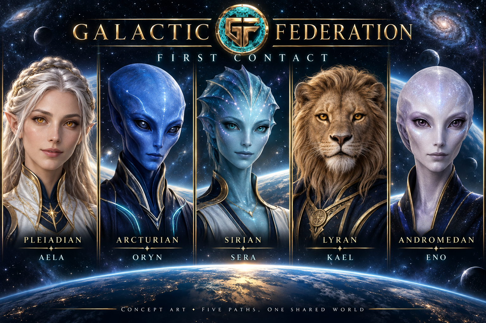

Command Deck
Read public Solana wallet balances and available reference prices.
A public address lookup does not prove wallet ownership.
Read a walletDc9CeuctqvP947ipnCJb8fSf6HhNWDooAQxsVHj2RNBV
Read public Solana wallet balances and available reference prices.
A public address lookup does not prove wallet ownership.
Read a walletInspect a Solana token's controls and up to 20 largest token accounts, with sources and explicit unknowns.
A structure report is not a token safety rating.
Inspect a tokenReview the published lock schedules and check the contracts on Solana.
Open lock recordsCheck a supported Solana token quote without connecting a wallet.
Check a quoteUse your approved email to sign in on the Account page.
Sign in to FederationWhen enrollment opens, start with a Federation account, then follow the Alliance guide to set up your profile or project.
Read the Alliance guideFollow the work, its current limits and the checks still needed before release.
Proposed terms, provider readiness and funding remain under review. No reward pool is open.
View staking preparation →Selected accounting flows are being tested. No public lending market or customer deposits are available.
Follow the lending build →Sign-in and account features are being tested separately. Public registration and cloud progress sync are closed.
See account build status →A narrow on-chain observation pilot is being prepared. Live monitoring and public alerts are inactive.
Explore the automation build →The Operations Assistant is a released manual operator tool. Our Automation Lab contains labelled demonstrations. Read the full build overview →
One ecosystem. Specialized systems. Shared record.
The Federation operates as one ecosystem with a shared record. $GFOF is the economic and participation layer within Command — not a separate division. Select a system to see how it connects.
Read the structure behind the ticker.
Dossier's Token Structure Lens is in public beta. Enter a Solana token mint to read its mint controls and up to 20 largest token accounts, with source slots and explicit unknowns. The read-only lookup can time out and cannot establish who controls an account, whether a launch was bundled, or where tokens were sold. Dossier's separate Program 01 convergence alerts are retired. Read the measured verdict.
Start with any valid Solana token mint. The dated September GFOF example concerns the former mint, not the replacement. Dossier labels only evidence it can verify.
Every commitment the Federation makes publicly is tracked on a corrections log — status-labeled, appended, never deleted. Forecasts are filed as byte-exact text and anchored to the Bitcoin blockchain via OpenTimestamps, so anyone can verify when a claim existed without trusting the Federation. Misses are documented with the same prominence as keeps.
Every promise, status-labeled. Appended, never deleted.
The Federation Record Scored forecastsFalsifiable claims, timestamped and anchored. No price predictions.
Treasury Live transparencyThree current-mint locks, dated evidence, live finalized reads and unlock dates. Former-token records are archived separately.
The Capital Command of the On-Chain Economy.
Epoch 2 // SHORTAGE_EVENT
FCC is the Federation's public capital-accountability experiment. Its methodology and record are public, but it is not an operating capital manager: there is no capital under management, no mandates, no strategies, and no counterparties. Epoch 2's latest recorded state is SHORTAGE_EVENT; the pre-execution freeze status was BLOCKED. Intake was consumed, and no rerun is authorized.
v0.3 · RATIFIED_AWAITING_CUTOFF
SHORTAGE_EVENT
No selected slate written
Consumed · no rerun authorized
Explore the Research Log (canonical posts on Paragraph), the borrower-protective Liquidation Specification v0.2.2, and the Governance Specification v0.2. Lending now has a private prototype for selected accounting flows; it is not a public or audited lending service. See its progress and open gates. The governance specification records the current advisory deployment and preserves its earlier design history. The research publication's weekly cadence and missed weeks are documented in the corrections log.
Open the Research LogFederation Governance
An advisory DAO is live on Realms, gated to the former GFOF mint. No replacement-mint governance migration has been established. The realm is advisory only — no treasury, repository, site or token authority is routed through it. Historical old-mint escrow cannot vote. No broader decentralization claim is made.
Read the Governance SpecAsk Admiral Voss, our chat persona, about public tools, research, and build status.
Dc9CeuctqvP947ipnCJb8fSf6HhNWDooAQxsVHj2RNBV
The former-holder exchange remains a separate process. The main deadline is November 4, 2026, with extended ordinary intake through January 5, 2027. Registered locked allocations are tracked separately after their original unlock. Dates use America/Chicago.
Read the dedicated instructions and verify the mint addresses and receiving wallet before any transfer.
Open the full migration process →Try a tool. Check the evidence. Help shape what comes next.
Once you’ve explored the tools, meet the crew through optional missions about money, choices, and trust.

Meet five guides across 11 interactive missions about money, choices, and trust. Start with a three-minute introduction or bring the crew together in The Meridian Relay.
Play your first mission → Browse all 11 missions →Fictional credits. No wallet or account. Play at your own pace.
Follow the private lending build, try a wallet-free financial simulation, and examine the published research and corrections that keep proposals separate from operating products.
See lending build progress → Try the Lending Lab → Explore the research → Read the public record →Ask a question, share a first impression, or follow the Federation’s updates.
Find us on Telegram ↗ Follow on X ↗